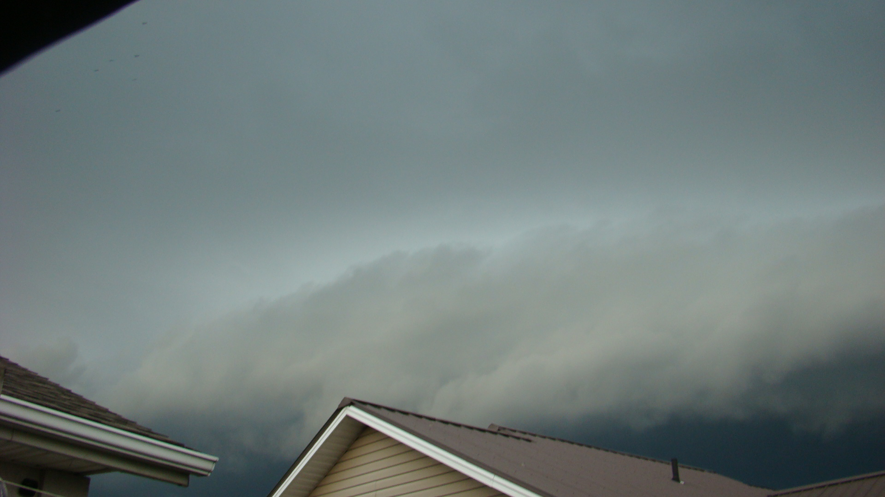
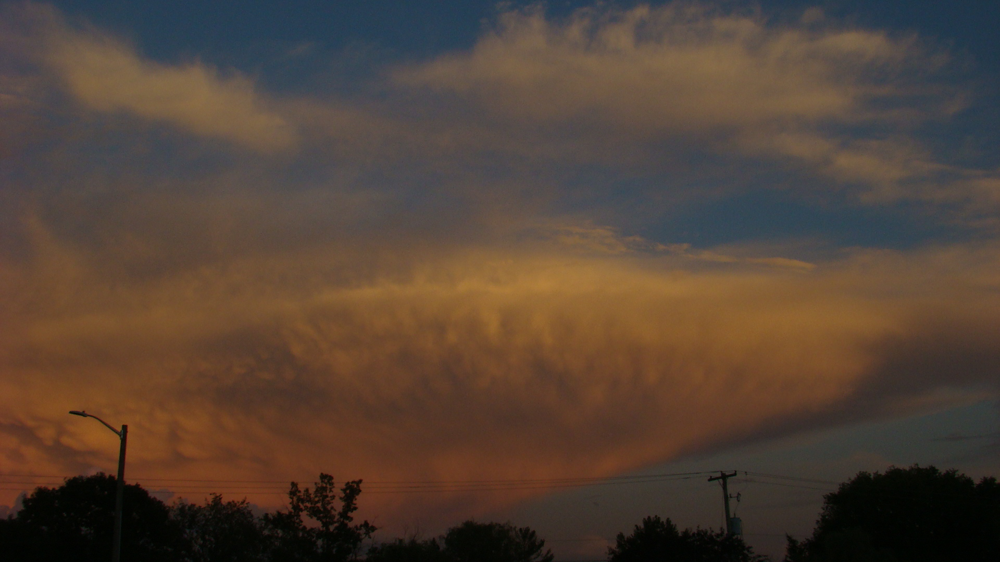

I dont remember much from 2022, it was one of my first times actually taking photos of the storms that passed over my house. I actually didnt record that much, only took 129 total photos. That year, not alot really happened in southern ontario, it was one of those uneventful years. From what I do remember, was that there was alot of summer-time convection. Tiny little storms that pop up, then choke themselves out. Even thought that was really all we got that year (besides linear slop, which I guess can be interesting), it was still cool to photograph.

This is one of the first shelf cloud photos I've ever taken. It was taken with the old sony digital camera that was given to me, which could shockingly do 1920 by 1080p photos. From what I can remember, the storm itself wasn't all that strong, maybe 40mph gusts? maybe even lower. Overall, it was nothing much, just a cool show and that was it.
 Now onto these two photos. These were taken along the St. Clair River, on the Canadian side facing east. This day I remember quite well, my family and I were camping along the river in mid Augest. Pretty much all afternoon pulse storms were firing up along lake breezes (Lake Huron was not far to our north, and Lake St. Clair was right to our south), but generally lacked shear to live for more than an hour or so. As the day turned to evening, and the sun began to set, there was slightly more shear in the lower parts of the atmosphere, so these cells lived for a bit longer. And right at golden hour, I managed to snag these two photos, along with another, but it turned out bad and slightly outt of focus sadly.
Now onto these two photos. These were taken along the St. Clair River, on the Canadian side facing east. This day I remember quite well, my family and I were camping along the river in mid Augest. Pretty much all afternoon pulse storms were firing up along lake breezes (Lake Huron was not far to our north, and Lake St. Clair was right to our south), but generally lacked shear to live for more than an hour or so. As the day turned to evening, and the sun began to set, there was slightly more shear in the lower parts of the atmosphere, so these cells lived for a bit longer. And right at golden hour, I managed to snag these two photos, along with another, but it turned out bad and slightly outt of focus sadly.
